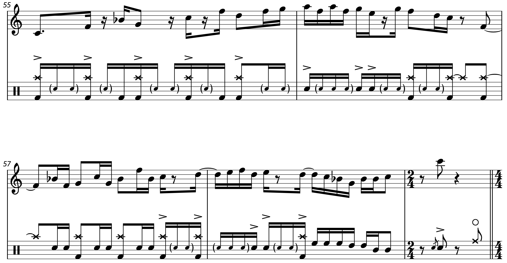
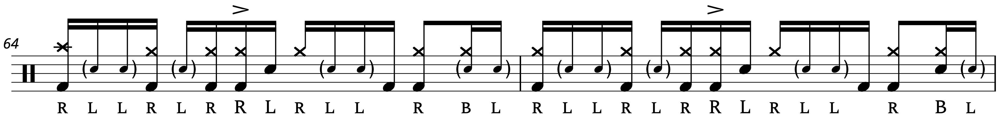
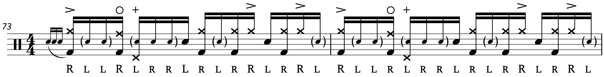
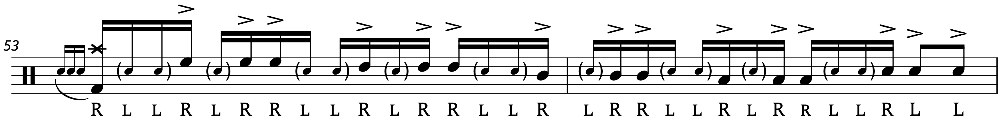
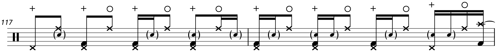
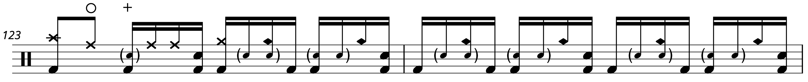
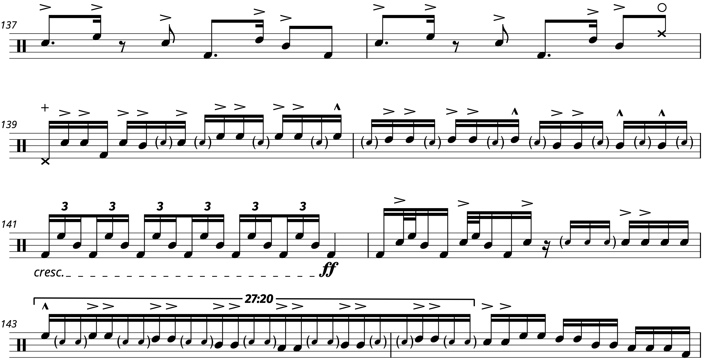

Transcription: “Nite Sprite” — Steve Gadd with Chick Corea
I wasn’t planning on sharing this until the spring or summer… but I’ve decided now is as good of a time as any, with the news of Chick Corea’s recent passing from cancer at the age of 79.
Corea was obviously a talented pianist, but he was one heck of a composer — much like Frank Zappa, musicians could come from all over and show off by navigating Corea’s complicated arrangements. He also had a deep relationship with many drumming heroes, like today’s subject Steve Gadd, or perhaps Dave Weckl; The Elektric Band helped to firmly establish Weckl as a fusion legend. But anyway, let’s get on with the post.
Towards the end of high school, when I really got into Steely Dan’s Aja, I searched around for some drum sheet music of Steve Gadd’s playing on the title track. Amidst my Googling, I found a chart breaking down some of Steve Gadd’s playing on a Chick Corea tune called “Nite Sprite”, off of The Leprechaun.
{kind=link}
It’s a pretty short chart, but I gave the tune a listen, and bloody hell is it something else. This was the first time I had ever listened to this very fierce, dense type of fusion, but right away I could tell Steve Gadd was drumming on this track like his life depended on it — ICYWW, he plays drums for the entire record.
It was fun to follow along with the chart I found, but I wanted to learn more about Steve’s playing on the track. The chart’s author, Orazio DeLeo, shows up in a few old drum forums. He made a chart about “Aja” that I found around the same time, as well as a chart about “Lenore”, another track off of The Leprechaun. He has a very detailed style, and it’s even more impressive considering it’s all done by hand. But anyway, I got to work on “Nite Sprite” myself.
I started on the tune by working out the grooves and then the fills. I debated how to share this song; at first I considered doing it in the style of the chart I found, almost like a highlight reel. But there’s just so much going on, and it’s a bit difficult to string together all the grooves when they’re isolated; so I decided to do a full transcription. All I really had left to do was was the intro and outro, so I figured “why not just go for it?”.
Well, these kind of projects remind me why I tend to avoid doing full song transcriptions. At 8 pages, this was quite an ordeal, but songs like this really require a note-for-note analysis.
The intro and outro are pretty straightforward — it’s the middle of the tune that’s really exciting, where the rest of the players basically trade short solos as Gadd goes through a series of increasingly elaborate patterns. There’s an ensemble figure that connects the different solos, first showing up at the 1:29 mark. Here’s the lick with the main melody so you can see how it all lines up:
Gadd plays slight variations on this cue throughout the tune, with regards to accents, flams, dynamics, and orchestrations. I did my best to get it all down, but I think he’s ad–libbing much of it; I also think he’s winging the accents on the hi hat during the intro. I didn’t want to get too caught up in the details for these parts, because I wasn’t that interested in them.
Now onto the fun stuff: most of Gadd’s moves on this track (including the ensemble figures) make use of different paradiddle permutations. For instance, the first groove we hear during the main chunk of the song uses inverted paradiddle sticking — RLLR LRRL (these are also known as “reverse paradiddles”):
This next groove has the same idea; also take note of the paradiddle action during beats three and four:
In addition, I’m pretty sure this little interlude is built around inverted paradiddles:
Meanwhile, the solo fill heard at 1:27 uses a spin on the paradiddle-diddle. Notice the sticking I have included in this excerpt; the “rudiment” starts on the “a” after one, and with accents only on right hand, it has a very unique lope to it:
As the number progresses, Gadd starts to introduce more of a disco/dance flair to his playing. Very interestingly, some of the final grooves don’t have strong backbeats:
The tune also has an example of Gadd’s funk samba groove, quite challenging to play at this tempo:
Compare it to what he plays during the fade-out on “Aja”:
The craziest moment is perhaps during the 8 bar drum solo. The solo has some familiar moves, like Gadd’s take on the Bonham hand–to–foot triplet, and off-beat hertas. However, there’s one lick that really stands out, see if you can spot it:
Yeah, go ahead and stare at that for a moment. I have given this solo many listens, and even with slowing it down, that’s my best shot — it really sounds like he’s playing 27 even notes over five taps from my foot. In terms of execution, it’s basically a double stroke roll, played with inverted sticking (RLLR RLLR). But man, you don’t see a rhythm like that every day, even in the DCI world.
I tried my darnedest to simplify it, but I don’t think there’s any other way to notate this lick. I poked around the deepest corners of the internet looking for other interpretations of the solo. I found a couple, but they either had a subdivision that just didn’t sound right, or involved a convoluted mixture of drags/ties/dotted notes.
I don’t known of any other fill Gadd has played that’s quite like this one. Compared to guys like Billy Cobham or Vinnie Colaiuta, Gadd doesn’t often wander into gnarly tuplet territory; he gets plenty complicated with duple and triple rhythms. It really makes me wonder what inspired him to cook this up. It’s possible that he might have been going for 16th note triplets or 16th notes quintuplets, and this is what ended up coming out. But who can say?
Like I said earlier, the outro is pretty simple, save for some mixed meter action in bars 151 and 152. I had found lead sheets of the tune that featured combinations of 3/4 and 4/4 for this section… but I tend to go for the simplest answers (i.e. the one with the fewest time signature changes).
I actually didn’t notice a meter change until I found the lead sheets; I was too busy listening to Gadd as he sounds like he’s trying to break his drums in the final measures. It really cracks me up when I imagine Steve beating his drums like a madman on a record that has this for album art:
Yipes.
Oh I’m just having fun. Even with a questionable taste in album art, only Chick could write a tune like this, giving all the players outrageous opportunities to show off. When I first heard “Nite Sprite”, there was a lot to process; this song is one of those “what the hell is going on” moments.
“Nite Sprite” isn’t one of Steve’s best known songs, especially among younger drummers, but almost anyone who’s heard this number talks about how much of a whirlwind it is. I don’t disagree. I know I’m gushing over Steve here, but we gotta appreciate Chick for stringing together a tune like this. Chick had just played at CU about a 18 months ago, right before COVID hit. I had to work another gig that night, but I got a chance to talk to the folks who worked his concert, and Chick sounded like a cool dude. I guess all there’s left to do is re–listen to his entire discography.
“Nite Sprite” on Spotify and Apple Music.
Interestingly, both Apple Music and Spotify mispell the name of of song as “Night Sprite”. However, take a look at the vinyl jacket and you’ll see it’s spelled “Nite”. Whatever.
Posted on February 14, 2021
Tags: 2021 • Transcription • Steve Gadd • Chick Corea